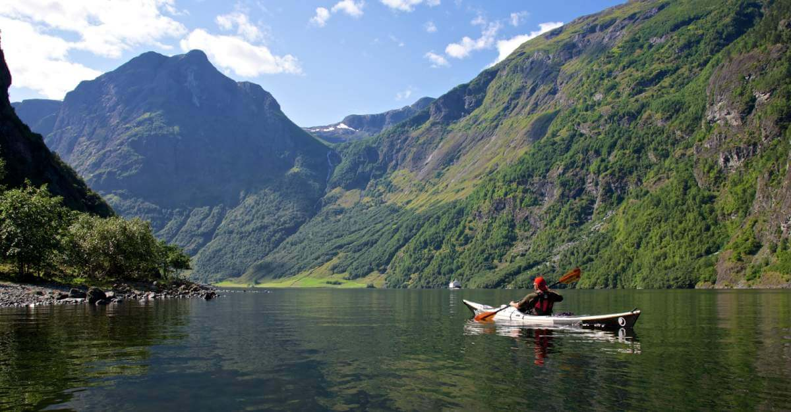

ФЬОРДЫ
Находящиеся под защитой ЮНЕСКО фьорды – символ норвежских традиций. Здесь время течет медленно, по своим законам.

Всего в Норвегии свыше тысячи фьордов, но самые знаменитые из них – Нэрëй-фьорд, Согне-фьорд, Люсе-фьорд и Гейрангер-фьорд, которые вы могли видеть на открытках, – расположены на западном побережье, в Регионе фьордов.
Внешне фьорды напоминают спокойные голубые озера, но вода в них соленая. По сути это длинные узкие морские заливы, врезающиеся глубоко в сушу. С обеих сторон фьорды нередко обрамлены величественными скалами.
С практически вертикальных скалистых берегов срываются малые и большие водопады, берущие свое начало на высокогорных ледниках.

Хотя один фьорд часто является продолжением другого и вы можете плыть от фьорда к фьорду и возвращаться в открытое море, на фьордах вы почувствуете себя так, словно перенеслись в другую вселенную, особенно если приехали в этот регион зимой.
Чтобы понять, почему именно фьорды являются одним из самых чтимых символов Норвегии и одновременно одной из самых посещаемых ее достопримечательностей, нужно знать, что они означают для самих норвежцев.
Более чем что-либо другое фьорды и окружающие их земли напоминают о прошлом. О временах, когда большая часть норвежцев жила в невероятно тяжелых условиях, в непреступных горах, возделывая скудную каменистую почву (да и сегодня некоторые по-прежнему живут так). О временах, когда урожаи фруктовых деревьев были обильными, а овечья голова считалась настоящим деликатесом (здесь и сейчас многие любят это экзотичное блюдо).
Хотя здешний ландшафт кажется суровым, Регион фьордов легко можно изучить самостоятельно или с гидом. Повсюду разбросаны небольшие деревни и проложены многочисленные маршруты для пеших походов по горам и ледникам.

Чем заняться на фьордах
Начните с хайкинга и неспешных прогулок по городкам и деревушкам или отправьтесь на экскурсию с гидом по смотровым площадкам и примечательным местам возле фьордов, в горах и у водопадов.
Более сложные пешие маршруты включают восхождение к вершинам, откуда открываются потрясающие виды на окрестности. Вы можете также поплавать на каяках или стоячем паддл-борде (SUP), заняться рафтингом, восхождением на ледник, скалолазанием или подняться по виа феррата. Кроме того, здесь проводятся морские, речные и озерные рыболовные туры с гидом.
Кое-где, например, в Суннмёрских Альпах, у вас есть возможность кататься на лыжах в любое время года, одновременно любуясь фьордами. Летнее катание на лыжах – популярное занятие, которое можно совместить плаванием во фьордах. При этом за один день вы успеете и погонять на лыжах, и окунуться в воду фьорда.

На берегах фьорда вас ждут исторические места, руины древних зданий, этнографические музеи, музеи искусств, а также наследие эпохи викингов. В Список Всемирного наследия ЮНЕСКО входят ганзейская набережная Брюгген в Бергене, деревянная церковь Урнес, Нэрёй-фьорд и Гейрангер-фьорд и их окрестности.
В этом регионе имеются несколько национальных парков с размеченными тропами, домиками для ночевки с самообслуживанием, коттеджами. Здесь богатая флора и фауна, озера, реки, ледники. Вы можете также воспользоваться службой помощи туристам.
Объекты Всемирного наследия

В 2005 году фьорды Западной Норвегии, а именно Гейрангер-фьорд и Нэрëй-фьорд, получили статус Объекта Всемирного наследия ЮНЕСКО.
«Своей красотой они обязаны своим крутым склонам, сложенным кристаллическими породами. Берега фьордов возвышаются над водами Норвежского моря до высоты 1 400 метров, и уходят на глубину до 500 метров. С обрывистых берегов фьордов срываются многочисленные водопады, а в их окрестностях, покрытых лиственными и хвойными лесами, можно увидеть ледники, а также ледниковые озера, реки и горы», – так норвежские фьорды описывает ЮНЕСКО.
В 2006 году совет экспертов общества National Geographic составил рейтинг самых популярных объектов Всемирного культурного наследия. Норвежские фьорды получили первое место, опередив Галапагосские острова, египетские пирамиды, Гранд-Каньон, Ангкор-Ват и Мачу-Пикчу.
«Это служит подтверждением тому, что, по сравнению с другими странами, норвежцы великолепно оберегают свое достояние. Руководителям других направлений было бы нелишним поучиться у них и адаптировать норвежский опыт к своей ситуации», – говорит Джонатан Б. Туртеллот, директор Центра устойчивого развития общества National Geographic Society.